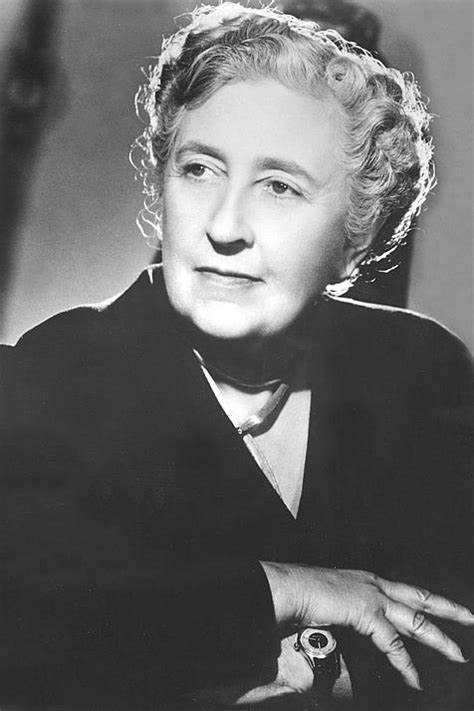

Agatha Christie
Escritora inglesa que se destacou pelos romances policiais

Agatha ficou conhecida como "dama do crime", tendo seus personagens incorporados na cultura popular através de filmes, como O Assassinato no Expresso do Oriente, e outras adaptações de suas obras
- Linha do tempo
- 1890 - Nasceu Agatha Mary Clarissa Muller em 15 de setembro em Torquay, Inglaterra
- 1916 - 1924 - Agatha começa a escrever contos policiais e o personagem Hercule Poirot é criado
- 1925 - 1928 - Periodo em que Agatha enfrentou diversas dificuldades, entre elas a morte de sua mãe, e o divórcio
- 1929 - 1938 - Um novo começo para Agatha, fez diversas viagens que inclusive serviram de inspiração para a obra "O Assassinato no Expresso Oriente". Também conheceu seu segundo Marido durante escavações
- 1939 - 1945 - Fez serviço voluntário em hospitais na Inglaterra durante o periodo de segunda guerra mundial0
- 1946 - 1976 - Agatha percebeu que devido a sua intensa atividade como escritora, as tarifações passaram a ser elevadas, o que contribuiu para diminuir o ritmo, desta forma, passou a levar uma vida mais calma no interior da Inglaterra com seu marido e cachorro. Faleu em janeiro de 1976 de causas naturais